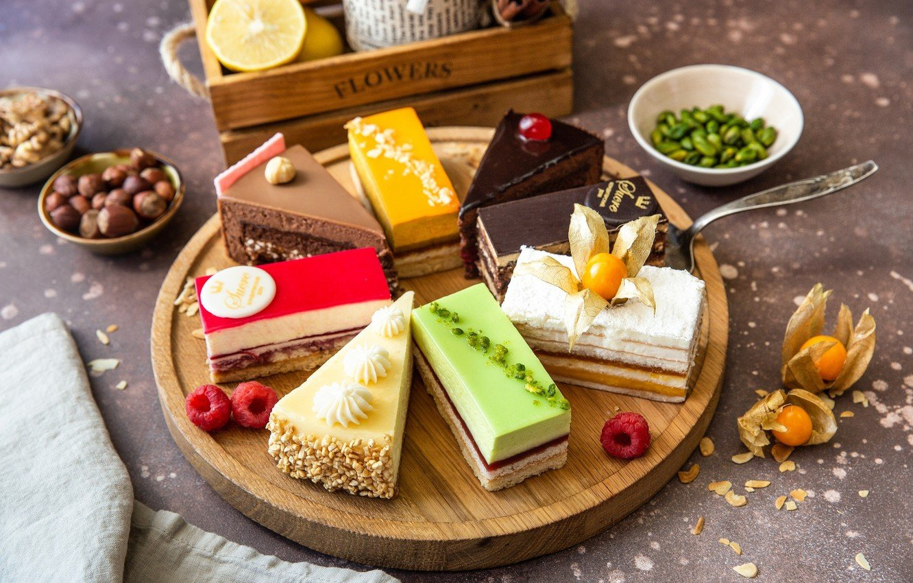
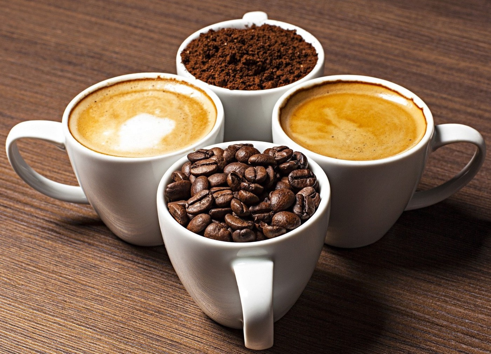
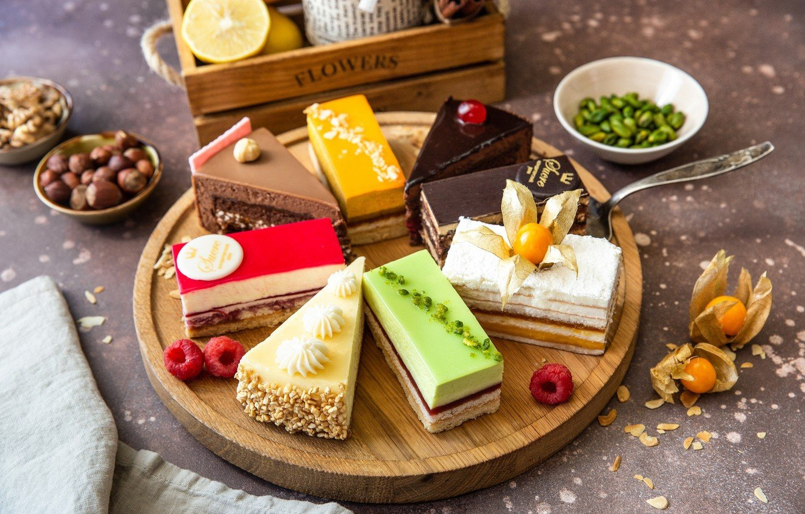
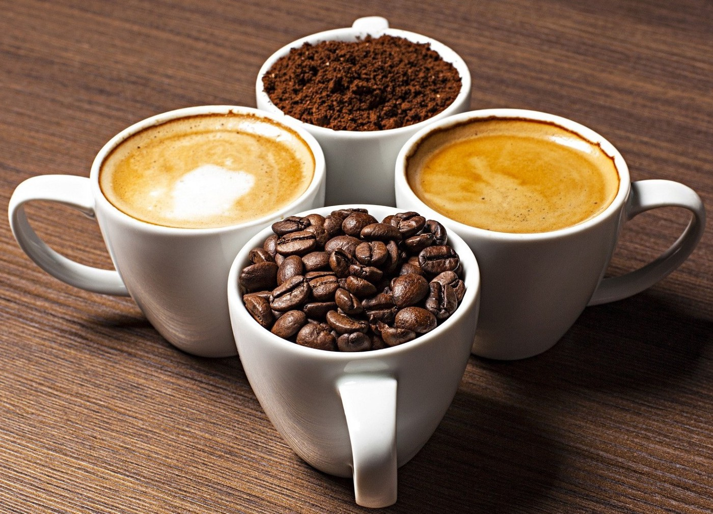
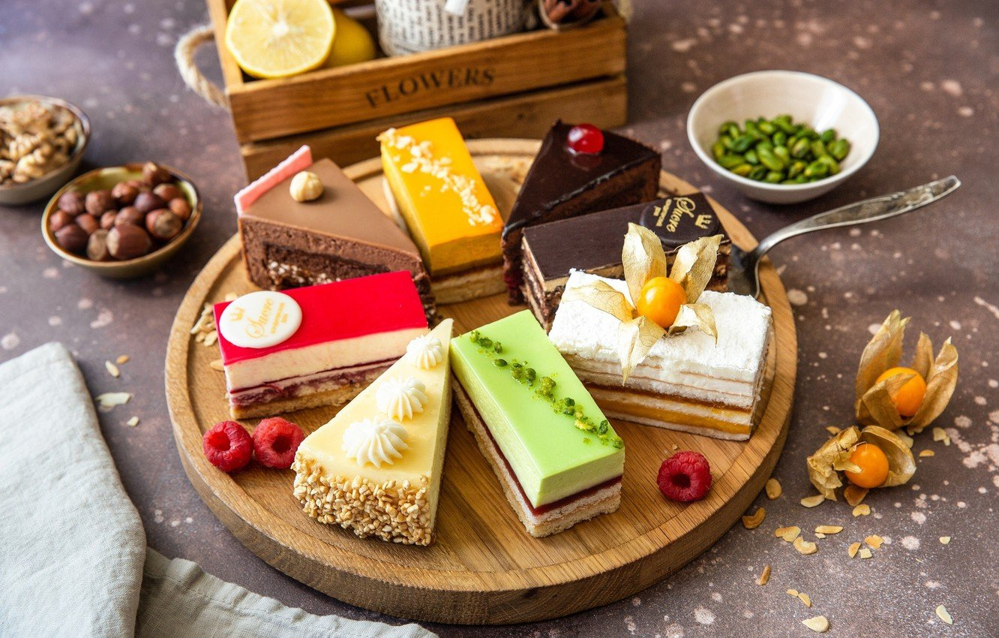
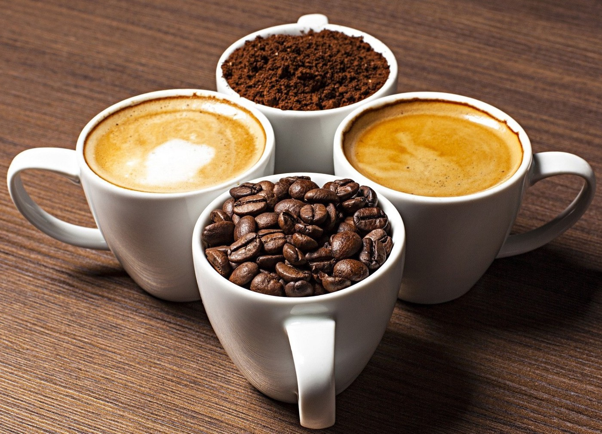
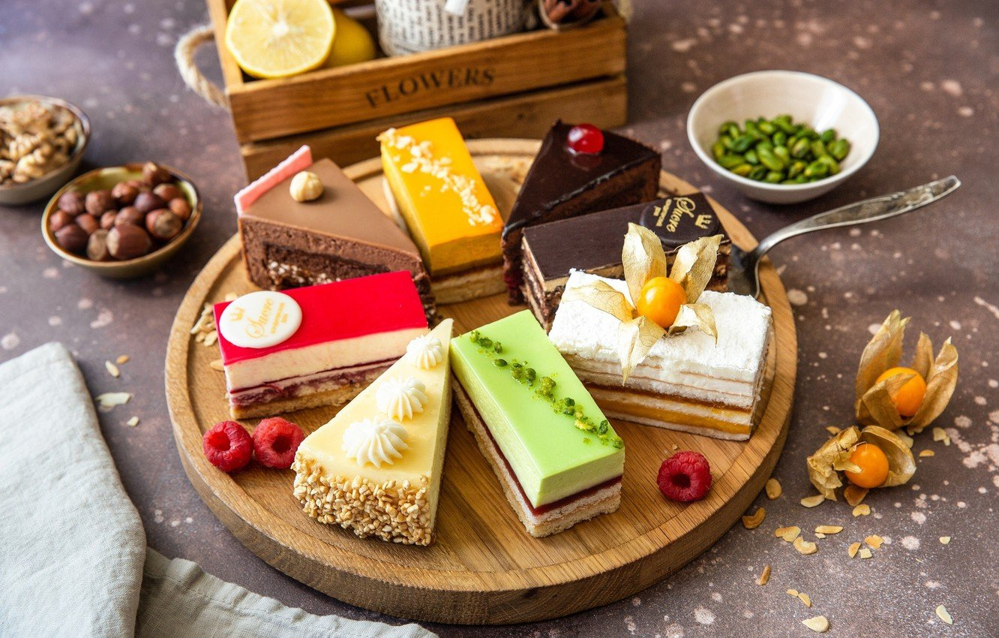
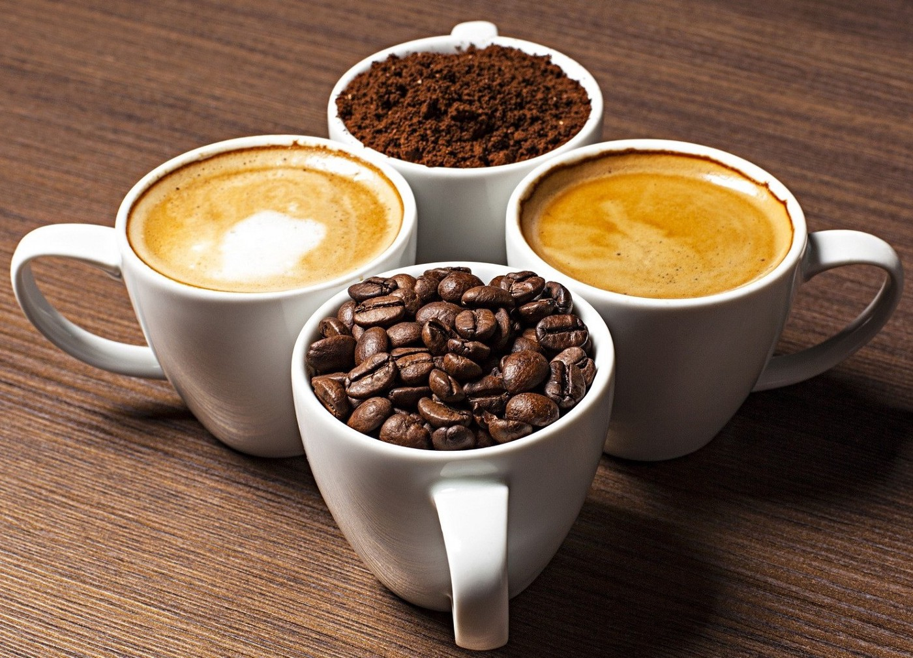

 



Занимаюсь выпечкой на любой вкус.
Создаю шедевры с 2008 года.
Изготовление тортов любой сложности под заказ.
Продукты Для коржей: Мука - 750 г Масло сливочное (холодное) или маргарин - 400 г Яйца - 2 шт. Вода холодная - 150 мл Водка или коньяк - 3 ст. л. Уксус 9% - 1 ст. л. Соль - щепотка * Для заварного крема: Молоко - 1 л Яйца - 4 шт. Мука - 100 г Сахар - 300 г Ванильный сахар - 20 г Масло сливочное - 300 г (для взбивания) + 50 г (в горячий крем)
Готовим коржи. В стакане смешиваем холодную воду, уксус и водку. Фото приготовления рецепта: Классический торт "Наполеон" - шаг №2 В другой посуде слегка взбиваем венчиком яйца со щепоткой соли. Фото приготовления рецепта: Классический торт "Наполеон" - шаг №3 Вливаем жидкость к яйцам и тщательно перемешиваем. Фото приготовления рецепта: Классический торт "Наполеон" - шаг №4 На стол просеиваем муку, сверху выкладываем на нее нарезанные мелким кубиком сливочное масло или маргарин. Фото приготовления рецепта: Классический торт "Наполеон" - шаг №5 Большим ножом рубим масло с мукой в мелкую крошку. Фото приготовления рецепта: Классический торт "Наполеон" - шаг №6 Затем собираем эту крошку в горку, а в центре делаем углубление, вливаем яичную смесь. Фото приготовления рецепта: Классический торт "Наполеон" - шаг №7 Быстро замешиваем слоеное тесто. Фото приготовления рецепта: Классический торт "Наполеон" - шаг №8 Делим тесто на 12 частей и скатываем в шарики. Фото приготовления рецепта: Классический торт "Наполеон" - шаг №9 Кладем полученные шарики теста на тарелку и заворачиваем их в пищевую пленку, чтобы они не обветрились. Затем убираем тесто в холодильник на 1-1,5 час, чтобы оно хорошо охладилось. Фото приготовления рецепта: Классический торт "Наполеон" - шаг №10 Тем временем готовим крем для торта "Наполеон". В кастрюле соединяем муку, сахар, ванильный сахар, яйца. Фото приготовления рецепта: Классический торт "Наполеон" - шаг №11 Растираем венчиком в однородную смесь. Фото приготовления рецепта: Классический торт "Наполеон" - шаг №12 Добавляем понемногу молоко и хорошо размешиваем массу венчиком до однородного состояния. Фото приготовления рецепта: Классический торт "Наполеон" - шаг №13 Ставим кастрюлю с содержимым на небольшой огонь, непрерывно перемешиваем массу венчиком, особенно на дне кастрюли, чтобы избежать образования мучных комков. Как только заварной крем загустеет и начнет закипать, выключаем огонь и снимаем с плиты. Фото приготовления рецепта: Классический торт "Наполеон" - шаг №14 Далее в горячую заварную массу добавляем сливочное масло (50 г) и размешиваем до полного его растворения. Фото приготовления рецепта: Классический торт "Наполеон" - шаг №15 Крем накрываем пищевой пленкой так, чтобы пленка легла прямо на его поверхность. В таком виде оставляем заварной крем охлаждаться до комнатной температуры! Фото приготовления рецепта: Классический торт "Наполеон" - шаг №16 Выпекаем коржи. Когда тесто хорошо охладится, берем один шарик теста и раскатываем в круг прямо на пергаментной бумаге. Фото приготовления рецепта: Классический торт "Наполеон" - шаг №17 Сверху на тесто кладем тарелку или форму диаметром 22-24 см. и вырезаем круг, обрезки теста не убираем, оставляем все вместе на противне. Фото приготовления рецепта: Классический торт "Наполеон" - шаг №18 Тесто накалываем вилкой и выпекаем в заранее разогретой до 200-220 ℃ духовке 5-7 минут. Фото приготовления рецепта: Классический торт "Наполеон" - шаг №19 Коржи для наполеона пекутся очень быстро, главное уследить, чтобы они не пригорели. Пока выпекается один корж, быстро раскатываем следующий. Таким образом, выпекаем все 12 коржей вместе с обрезками. Обрезки не выбрасываем - они нам понадобятся для украшения торта. Фото приготовления рецепта: Классический торт "Наполеон" - шаг №20 Мягкое сливочное масло взбиваем миксером до появления пышной светлой массы, не прекращая взбивания, понемногу добавляем охлажденный до комнатной температуры заварной крем и взбиваем до однородного состояния. Масляный крем для торта "Наполеон" готов. Фото приготовления рецепта: Классический торт "Наполеон" - шаг №21 Собираем торт "Наполеон". Для начала нужно отложить немного крема, для смазывания верха и боков торта. Фото приготовления рецепта: Классический торт "Наполеон" - шаг №22 На блюдо кладем первый корж, смазываем приготовленным кремом, накрываем вторым коржом и так собираем весь торт. Затем слегка надавливаем на торт сверху, чтобы крем хорошо распределился. Фото приготовления рецепта: Классический торт "Наполеон" - шаг №23 Смазываем бока и поверхность торта отложенным кремом. Фото приготовления рецепта: Классический торт "Наполеон" - шаг №24 Для украшения остатки коржей (обрезки) перекладываем в пакет и с помощью скалки измельчаем их в крошку. Фото приготовления рецепта: Классический торт "Наполеон" - шаг №25 Полученной крошкой обсыпаем бока и поверхность торта. Фото приготовления рецепта: Классический торт "Наполеон" - шаг №26 Отправляем торт в холодильник на несколько часов, а лучше всего на ночь, для пропитки. Фото приготовления рецепта: Классический торт "Наполеон" - шаг №27 Спустя указанное время достаем торт из холодильника. Фото приготовления рецепта: Классический торт "Наполеон" - шаг №28 Нарезаем на кусочки и можем порадовать себя и своих близких изумительно вкусным тортом "Наполеон". Фото приготовления рецепта: Классический торт "Наполеон" - шаг №29 Классический торт "Наполеон" готов. Приятного аппетита и удачной вам выпечки!
Продукты Для теста: Молоко (тёплое) - 250 мл Яйцо - 1 шт. Масло растительное - 2 ст. ложки + для работы с тестом Мука пшеничная - 400-450 г Сахар - 1 ст. ложка Дрожжи сухие быстродействующие - 7 г Ванильный сахар - 1 ч. ложка Соль - 1 ч. ложка * Для начинки: Масло растительное - 50 мл Сахар - 3 ст. ложки (по вкусу) + для посыпания плюшек * Для смазывания плюшек: Яйцо - 1 шт. Молоко - 1 ч. ложка
Муку просеиваем (400 г – около 3-х стаканов объёмом 200 мл). Добавляем в муку все сухие ингредиенты для теста: дрожжи, сахар (1 ст. ложка), ванильный сахар и соль. Перемешиваем венчиком. Фото приготовления рецепта: Плюшки с сахаром - шаг №2 Добавляем тёплое молоко, яйцо и растительное масло (2 ст. ложки). Перемешиваем и собираем тесто ложкой. Фото приготовления рецепта: Плюшки с сахаром - шаг №3 Вымешиваем тесто руками минут 7-10. При необходимости добавляем ещё муки. Тесто должно отходить от стенок чашки, но при этом оставаться липким. Руки и чашку смазываем маслом. Формируем из теста шар, выкладываем в чашку. Накрываем плёнкой и ставим чашку с тестом в тёплое место для подъёма, примерно на 1 час. Фото приготовления рецепта: Плюшки с сахаром - шаг №4 Тесто увеличилось, стало воздушным и пористым. Фото приготовления рецепта: Плюшки с сахаром - шаг №5 Тесто слегка обминаем (руки слегка смазываем маслом), делим на равные кусочки (примерно 16 штук). Каждый кусочек теста скатываем в шарик. Муку уже не добавляем. Накрываем плёнкой или пакетом и оставляем на 15 минут для подъёма. Фото приготовления рецепта: Плюшки с сахаром - шаг №6 Формируем плюшки. Для этого каждый шарик теста раскатываем в овал (руки и рабочую поверхность можно смазать маслом, чтобы тесто не липло). Смазываем раскатанное тесто маслом и сверху посыпаем сахаром. Фото приготовления рецепта: Плюшки с сахаром - шаг №7 Сворачиваем тесто с сахаром в рулетик. Фото приготовления рецепта: Плюшки с сахаром - шаг №8 Затем рулетик сгибаем пополам и делаем надрез посередине, но не доходя до конца. Фото приготовления рецепта: Плюшки с сахаром - шаг №9 Разворачиваем - и получается плюшка. Фото приготовления рецепта: Плюшки с сахаром - шаг №10 Выкладываем заготовки на противень, смазанный растительным маслом. Прикрываем плёнкой и оставляем ещё минут на 10 для подъёма. Разогреваем духовку до 190°C. Фото приготовления рецепта: Плюшки с сахаром - шаг №11 Смазываем плюшки смесью яйца и молока. Сверху можно ещё присыпать сахаром для корочки. Фото приготовления рецепта: Плюшки с сахаром - шаг №12 Выпекаем плюшки в заранее разогретой духовке при температуре 190°C 20-30 минут. Фото приготовления рецепта: Плюшки с сахаром - шаг №13 Достаём плюшки из духовки и горячими выкладываем на блюдо. Тесто - мягкое и воздушное, а сахарная корочка - хрустящая! Приготовьте и порадуйте своих близких румяными плюшками
Продукты (на 12 порций) Масло сливочное - 180 г Шоколад - 100 г Сахар - 200 г Яйцо - 4 шт. Мука - 100 г Какао - 40 г Разрыхлитель - 1 ч.л.
Как приготовить маффины "Брауни": Сливочное масло растопить с шоколадом на водяной бане, немного остудить и слегка взбить миксером. Добавить сахар и опять хорошо взбить. Фото приготовления рецепта: Капкейки "Брауни" - шаг №2 Далее по одному добавляем яйца и после каждого взбиваем массу в течение минуты. Фото приготовления рецепта: Капкейки "Брауни" - шаг №3 В отдельную емкость просеиваем муку, какао и разрыхлитель. Фото приготовления рецепта: Капкейки "Брауни" - шаг №4 Объединяем сухие и жидкие ингредиенты и вымешиваем тесто до однородности. Фото приготовления рецепта: Капкейки "Брауни" - шаг №5 Раскладываем тесто по формочкам (количество теста рассчитано где-то на 12-14 кексиков). Выпекаем шоколадные кексики в разогретой до 180 градусах духовке около 20 минут. Фото приготовления рецепта: Капкейки "Брауни" - шаг №6 Капкейки "Брауни" готовы.